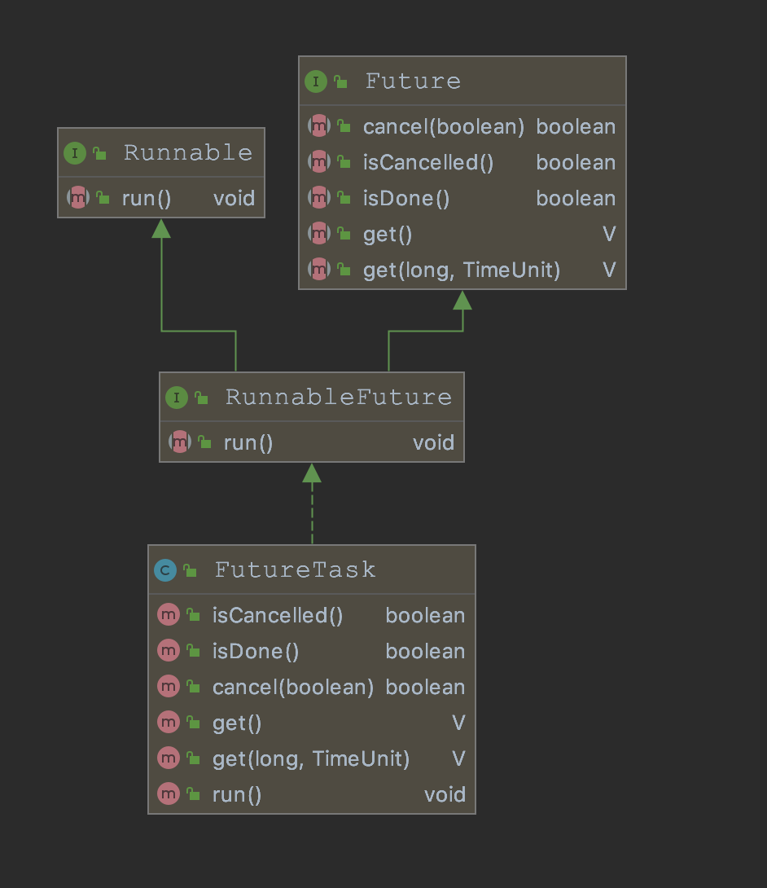

java thread
线程是程序中的执行线程。 Java 虚拟机允许应用程序同时运行多个执行线程。
-
每个线程都有一个优先级1-10,默认是5，创建一个新线程时默认继承父线程的优先级。
-
守护进程一般用于定时器或清除过时的缓存等任务。注意守护进程不要去访问任何文件，数据库，因为可能在任意时刻中断。
-
线程在抛出不被检测到的异常时会导致线程终止，可以重写uncaughtException方法来处理没有被捕获的异常，生产中一般只是打印日志：
```java public static Thread newThread(String name, Runnable runnable, boolean daemon) { Thread thread = new Thread(runnable, name); thread.setDaemon(daemon); thread.setUncaughtExceptionHandler(new Thread.UncaughtExceptionHandler() { public void uncaughtException(Thread t, Throwable e) { log.error("Uncaught exception in thread '" + t.getName() + "':", e); } }); return thread; }
// 如果没有重写，会调用的默认的ThreadGroup implements Thread.UncaughtExceptionHandler public void uncaughtException(Thread t, Throwable e) { // 先调用父类的如果不为空 if (parent != null) { parent.uncaughtException(t, e); } else { Thread.UncaughtExceptionHandler ueh = Thread.getDefaultUncaughtExceptionHandler(); if (ueh != null) { ueh.uncaughtException(t, e); // System.err输出，这个应该经常遇到 } else if (!(e instanceof ThreadDeath)) { System.err.print("Exception in thread \"" + t.getName() + "\" "); e.printStackTrace(System.err); } } } ```
有两种方法可以创建线程，extends Thread 和implements Runnable。
每个线程都有一个用于识别的名称。 多个线程可能具有相同的名称。 如果在创建线程时未指定名称，则会为其生成一个新名称。
如何终止一个线程？
- 正常逻辑执行完了，线程也就结束了
- 通过volitail变量作为标志位，外面设置位false，线程会立即结束
- 通过interrupt来结束线程。如果线程在休眠状态，会抛出InterruptedException异常，catch里可以结束线程。如果线程正常执行，通过判断interrupted标志位
线程的阻塞和唤醒
阻塞的本质就是将进程挂起，不再参与CPU调度，也就是修改进程的状态为非Runnable，这样CPU下次进行调度的时候就不会把它作为可选项了。
至于操作系统层面的阻塞和挂起，对上层应用来说其实是一样的，都对应着阻塞。
1. park()和unpark()
属于java.util.concurrent.locks.LockSupport提供的方法，为lock和其他同步类提供线程阻塞的基础语义，是一个基础方法！！
- 调用park()方法，会检查是否有调用者线程是否拥有一个许可permit，如果有消耗掉并立即返回，否则就会阻塞，直到有针对这个线程的unpark或者中断（这也是和wait方法的不同，不会抛出InterruptedException！），或者虚假调用。
- 调用unpark(thread)使给定线程的permit可用（如果它尚不可用）， 如果线程在park上被阻塞，那么它将解除阻塞，另外如果先调用unpark也能保证下一次park调用不会阻塞。和Semaphores不同的是，park的permit最多有一个。
park和unpark是高效的实现阻塞和唤醒指定线程的方式，替代废弃的Thread.suspend和Thread.resume。park也支持timeout的参数，非常适合忙等待模型，
park支持参数，while (!canProceed()) { ... LockSupport.park(this); }}
底层原理：
park底层是基于本地方法UNSAFE.park(false, 0L);
在Linux系统下，park和unpark是用的Posix线程库pthread中的mutex（互斥量），condition（条件变量）来实现的。简单来说，mutex和condition保护了一个叫_counter的信号量。
_当park时，检查_counter是不是大于0，如果是，则把_counter设置为0，返回。如果等于零，继续执行，阻塞等待；
void Parker::park(bool isAbsolute, jlong time) {
//判断信号量counter是否大于0，如果大于设为0返回
if (Atomic::xchg(0, &_counter) > 0) return;
//获取当前线程
Thread* thread = Thread::current();
assert(thread->is_Java_thread(), "Must be JavaThread");
JavaThread *jt = (JavaThread *)thread;
//如果中途已经是interrupt了，那么立刻返回，不阻塞
// Check interrupt before trying to wait
if (Thread::is_interrupted(thread, false)) {
return;
}
//记录当前绝对时间戳
// Next, demultiplex/decode time arguments
timespec absTime;
//如果park的超时时间已到，则返回
if (time < 0 || (isAbsolute && time == 0) ) { // don't wait at all
return;
}
//更换时间戳
if (time > 0) {
unpackTime(&absTime, isAbsolute, time);
}
// Enter safepoint region
// Beware of deadlocks such as 6317397.
// The per-thread Parker:: mutex is a classic leaf-lock.
// In particular a thread must never block on the Threads_lock while
// holding the Parker:: mutex. If safepoints are pending both the
// the ThreadBlockInVM() CTOR and DTOR may grab Threads_lock.
//进入安全点，利用该thread构造一个ThreadBlockInVM
ThreadBlockInVM tbivm(jt);
// Don't wait if cannot get lock since interference arises from
// unblocking. Also. check interrupt before trying wait
if (Thread::is_interrupted(thread, false) || pthread_mutex_trylock(_mutex) != 0) {
return;
}
//记录等待状态
int status ;
//中途再次检查许可，有则直接返回不等带。
if (_counter > 0) { // no wait needed
_counter = 0;
status = pthread_mutex_unlock(_mutex);
assert (status == 0, "invariant") ;
// Paranoia to ensure our locked and lock-free paths interact
// correctly with each other and Java-level accesses.
OrderAccess::fence();
return;
}
OSThreadWaitState osts(thread->osthread(), false /* not Object.wait() */);
jt->set_suspend_equivalent();
// cleared by handle_special_suspend_equivalent_condition() or java_suspend_self()
assert(_cur_index == -1, "invariant");
if (time == 0) {
_cur_index = REL_INDEX; // arbitrary choice when not timed
//线程条件等待 线程等待信号触发，如果没有信号触发，无限期等待下去。
status = pthread_cond_wait (&_cond[_cur_index], _mutex) ;
} else {
_cur_index = isAbsolute ? ABS_INDEX : REL_INDEX;
//线程等待一定的时间，如果超时或有信号触发，线程唤醒
status = os::Linux::safe_cond_timedwait (&_cond[_cur_index], _mutex, &absTime) ;
if (status != 0 && WorkAroundNPTLTimedWaitHang) {
pthread_cond_destroy (&_cond[_cur_index]) ;
pthread_cond_init (&_cond[_cur_index], isAbsolute ? NULL : os::Linux::condAttr());
}
}
_cur_index = -1;
assert_status(status == 0 || status == EINTR ||
status == ETIME || status == ETIMEDOUT,
status, "cond_timedwait");
_counter = 0 ;
status = pthread_mutex_unlock(_mutex) ;
assert_status(status == 0, status, "invariant") ;
// Paranoia to ensure our locked and lock-free paths interact
// correctly with each other and Java-level accesses.
OrderAccess::fence();
// If externally suspended while waiting, re-suspend
if (jt->handle_special_suspend_equivalent_condition()) {
jt->java_suspend_self();
}
}
当unpark时，unpark设置_counter为1，然后解锁 mutex返回。如果counter之前的值是0，则还要调用pthread_cond_signal唤醒在park中等待的线程。
void Parker::unpark() {
//定义两个变量，staus用于判断是否获取锁
int s, status ;
//获取锁
status = pthread_mutex_lock(_mutex);
//判断是否成功
assert (status == 0, "invariant") ;
//存储原先变量_counter
s = _counter;
//把_counter设为1
_counter = 1;
if (s < 1) {
// thread might be parked
if (_cur_index != -1) {
// thread is definitely parked
if (WorkAroundNPTLTimedWaitHang) {
status = pthread_cond_signal (&_cond[_cur_index]);
assert (status == 0, "invariant");
status = pthread_mutex_unlock(_mutex);
assert (status == 0, "invariant");
} else {
status = pthread_mutex_unlock(_mutex);
assert (status == 0, "invariant");
status = pthread_cond_signal (&_cond[_cur_index]);
assert (status == 0, "invariant");
}
} else {
//释放锁
pthread_mutex_unlock(_mutex);
assert (status == 0, "invariant") ;
}
} else {
//释放锁
pthread_mutex_unlock(_mutex);
assert (status == 0, "invariant") ;
}
}
感觉park和unpark是基于操作系统已有函数提供的基础语义，本身和锁没有啥关系，只是用于阻塞和唤醒指定线程，像ReentranLock的底层AQS里面会使用
LockSupport.park(this);，lock和wait是更高层次的方法，提供同步代码块级别的阻塞唤醒，保证线程安全。
2. wait()和notify()
wait()是属于Object里的方法，调用wait方法，会释放此对象上的锁，使的当前线程处于对象的wait_set中。
线程处于线程调度的目的处于休眠状态，直到它被唤醒：notify恰好是当前线程；notifyAll()；中断；或者经过一定的时间；虚假调用。
当前线程必须拥有此对象的监视器锁object's monitor，否则会抛出IllegalMonitorStateException，也就是一定要在synchronized同步代码块内调用wait()。因为底层是基于锁对象的monitor实现的。
public final native void wait(long timeout) throws InterruptedException;
public final void wait(long timeout, int nanos) throws InterruptedException {
if (nanos < 0 || nanos > 999999) {
throw new IllegalArgumentException(
"nanosecond timeout value out of range");
}
if (nanos >= 500000 || (nanos != 0 && timeout == 0)) {
timeout++;
}
wait(timeout);
}
public final void wait() throws InterruptedException {
wait(0);
}
wait方法对应的native是JVM_MonitorWait：里面通过ObjectMonitor的void wait(jlong millis, bool interruptable, TRAPS);实现，将当前线程封装成node，放入ObjectWaiter 的_WaitSet 中，并退出monitor释放锁，然后调用park()挂起自身。
notify()方法最终通过ObjectMonitor的notify(TRAPS)实现：如果当前_WaitSet为空，即没有正在等待的线程，直接返回；否则获取_WaitSet列表的第一个ObjectWaitor节点，然后根据不同的调度策略，选择头插入法或者尾插入法放到entryList或者cxq;最后调用unpark()方法唤醒阻塞在条件变量上的线程。
被唤醒的线程会重新竞争该锁对象，如果调用notify的线程退出同步代码块，wait的线程有可能获取到锁对象。
3. sleep(timeout)
sleep函数让执行线程休眠指定时间，不释放锁资源（直接走的系统库函数，不涉及什么锁），睡眠期间中断会抛出InterruptedException。
JVM_ENTRY(void, JVM_Sleep(JNIEnv* env, jclass threadClass, jlong millis))
if (millis < 0) {
THROW_MSG(vmSymbols::java_lang_IllegalArgumentException(), "timeout value is negative");
}
// 如果线程被中断，抛出中断异常
if (thread->is_interrupted(true) && !HAS_PENDING_EXCEPTION) {
THROW_MSG(vmSymbols::java_lang_InterruptedException(), "sleep interrupted");
}
// Save current thread state and restore it at the end of this block.
// And set new thread state to SLEEPING.
JavaThreadSleepState jtss(thread);
HOTSPOT_THREAD_SLEEP_BEGIN(millis);
EventThreadSleep event;
if (millis == 0) {
// 如果sleep(0),效果等同于yield
os::naked_yield();
} else {
ThreadState old_state = thread->osthread()->get_state();
thread->osthread()->set_state(SLEEPING);
// 如果睡眠期间被中断,抛出异常
if (!thread->sleep(millis)) { // interrupted
// An asynchronous exception (e.g., ThreadDeathException) could have been thrown on
// us while we were sleeping. We do not overwrite those.
if (!HAS_PENDING_EXCEPTION) {
if (event.should_commit()) {
post_thread_sleep_event(&event, millis);
}
// 设置异常结束，正常结束见末尾为0
HOTSPOT_THREAD_SLEEP_END(1);
// TODO-FIXME: THROW_MSG returns which means we will not call set_state()
// to properly restore the thread state. That's likely wrong.
THROW_MSG(vmSymbols::java_lang_InterruptedException(), "sleep interrupted");
}
}
// sleep结束，重新设置为旧状态
thread->osthread()->set_state(old_state);
}
if (event.should_commit()) {
post_thread_sleep_event(&event, millis);
}
HOTSPOT_THREAD_SLEEP_END(0);
JVM_END
操作系统的sleep(millis)函数是在挂起原语的基础上利用定时器实现的。
- 挂起进程（或线程）并修改其运行状态
- 用sleep()提供的参数来设置一个定时器。
- 当时间结束，定时器会触发，内核收到中断后修改进程（或线程）的运行状态。例如线程会被标志为就绪而进入就绪队列等待调度。
4. Yield()
向调度程序提示当前线程愿意放弃其当前对处理器的使用。 调度程序可以随意忽略此提示。
JVM_ENTRY(void, JVM_Yield(JNIEnv *env, jclass threadClass))
// 是否设置了DontYieldALot参数,默认为fasle。为true则直接返回
if (os::dont_yield()) return;
HOTSPOT_THREAD_YIELD();
// 调用系统的naked_yield，它会使调用线程放弃CPU使用权，加入到同等优先级队列的末尾
os::naked_yield();
JVM_END
线程的中断
要理解，线程任何时候都可能收到中断信号，下面分两个情况来讨论：
1. 线程运行期间收到中断
线程在运行期间RUNNABLE,收到中断信号，是可处理可不处理的！如果想处理，有两个方法可以检测到中断信号:
- Thread.interrupted() 静态方法
java
// 测试当前线程是否被中断。 通过该方法清除线程的中断状态
public static boolean interrupted() {
return currentThread().isInterrupted(true);
}
- 检测是否中断
java
// 实例方法，测试此线程是否已被中断。 线程的中断状态不受此方法的影响
public boolean isInterrupted() {
return isInterrupted(false);
}
注意如果线程没有处于运行状态，将不会收到中断信号，上面两个方法返回false。
两个方法调用的都是系统提供的private native boolean isInterrupted(boolean ClearInterrupted);，区别是一个会清除中断状态，一个不会清除中断状态。
apollo里有很多这样的例子：while循环的判断条件里，如果收到中断信号，就停止循环执行：
executorService.submit((Runnable) () -> {
//wait for the request connected to server
while (!stop.get() && !Thread.currentThread().isInterrupted()) {
try {
TimeUnit.MILLISECONDS.sleep(100);
} catch (InterruptedException e) {
}
//double check
if (stop.get()) {
break;
}
sendReleaseMessage(message);
}
});
2. 线程休眠或阻塞状态 抛出InterruptedException
当线程处于waiting, sleeping或者其他被占用如等待IO时，如果收到中断信号，会抛出InterruptedException。（可以这样理解，处理中断程序是需要线程处于运行状态获取CPU执行权的，但是现在时休眠或者阻塞状态没有CPU执行权，所以是不可中断的，会抛出异常）
像wait()，wait(long)，sleep(long)方法，也就是线程在WAITING, TIMED_WAITING,期间都会抛出InterruptedException
Future异步执行结果
1. FutureTask获取异步的执行结果
Future可以获取异步计算的结果，并提供超时功能。 提供了
- 检查计算是否完成isDone()方法：如果任务正常执行结束，抛出异常或者被取消，都会返回true
- 等待计算完成get(timeout)：阻塞的进行等待，直到计算完成或者超时。计算完成后可以检索结果
FutureTask是Future的基本实现，并且实现了Runnable接口，可以直接提交到线程池执行。

我们要知道FutureTask的底层原理，怎么获取异步的执行结果？
任务的状态有：
private static final int NEW = 0;
private static final int COMPLETING = 1;
private static final int NORMAL = 2;
private static final int EXCEPTIONAL = 3;
private static final int CANCELLED = 4;
private static final int INTERRUPTING = 5;
private static final int INTERRUPTED = 6;
可能的状态转换： CAS进行状态转换
- NEW -> COMPLETING -> NORMAL 正常执行得到结果
- NEW -> COMPLETING -> EXCEPTIONAL 执行过程中发生异常
- NEW -> CANCELED
- NEW -> INTERRUPTING -> INTERRUPTED
构造函数有：
// 通过Callable来创建
public FutureTask(Callable<V> callable) {
if (callable == null)
throw new NullPointerException();
this.callable = callable;
this.state = NEW; // ensure visibility of callable
}
// 通过Runnable来创建，内部会将Runnable转换为callable。result负责执行过程中接受结果引用
public FutureTask(Runnable runnable, V result) {
this.callable = Executors.callable(runnable, result);
this.state = NEW; // ensure visibility of callable
}
FutureTask本身是实现了Runnable接口的，先看其run方法
public void run() {
// 任务状态不是new，或者CAS设置为当前线程，因为可能有多个线程竞争
if (state != NEW ||
!RUNNER.compareAndSet(this, null, Thread.currentThread()))
return;
try {
Callable<V> c = callable;
if (c != null && state == NEW) {
V result;
boolean ran;
try {
// 执行callable,
result = c.call();
// ran是run的过去式，表示是否执行过
ran = true;
} catch (Throwable ex) {
result = null;
ran = false;
// 设置状态为异常，里面也会执行finishCompletion()
setException(ex);
}
// 如果执行成功，设置结果，里面也会执行finishCompletion()
if (ran)
set(result);
}
} finally {
// runner must be non-null until state is settled to
// prevent concurrent calls to run()
runner = null;
// state must be re-read after nulling runner to prevent
// leaked interrupts
int s = state;
if (s >= INTERRUPTING)
handlePossibleCancellationInterrupt(s);
}
}
看一下内部的方法
// 正常线程执行完成会调用这个方法，把执行结果赋值给outcome
protected void set(V v) {
// 注意这里是没有锁的，而是采用了cas的方式，只有在更新成功的情况下会进入逻辑
if (UNSAFE.compareAndSwapInt(this, stateOffset, NEW, COMPLETING)) {
outcome = v;
// 赋值完成更新最后的线程状态
UNSAFE.putOrderedInt(this, stateOffset, NORMAL); // final state
finishCompletion();
}
}
// 等待线程的唤醒以及线程执行完成的收尾工作，如辅助gc的措施
private void finishCompletion() {
// 假设 state > COMPLETING;
// 这里它没有直接获取所有waiter对象的方法，像是list那种，只能循环获取next
for (WaitNode q; (q = waiters) != null;) {
// 尝试将所有waiters全部置为null
if (UNSAFE.compareAndSwapObject(this, waitersOffset, q, null)) {
for (;;) {
Thread t = q.thread;
if (t != null) {
// 辅助gc将指针对象置空，这样它就没有引用路径了
q.thread = null;
// 唤醒那些调用get方法 而park阻塞等待的线程
LockSupport.unpark(t);
}
// 查看下个节点是不是还是空的，如果不是空的就继续，为空就退出循环
WaitNode next = q.next;
if (next == null)
break;
// 这里同样需要将指针对象置空
q.next = null;
q = next;
}
break;
}
}
// 这个方法默认是空的，可以在继承类中实现它，然后在线程执行完成之后附加一些方法
done();
callable = null; // to reduce footprint
}
我们肯定是要获取异步执行结果的，所以看下get()方法：
简单总结就是：如果任务状态没有结束，get线程就通过park()阻塞，并会形成一个简单的waiters等待链表。当任务结束时不管任务状态是异常还是正常结束，都会挨个唤醒等待的线程。
public V get() throws InterruptedException, ExecutionException {
int s = state;
// 小于COMPLETING只有new状态，进行等待
if (s <= COMPLETING)
s = awaitDone(false, 0L);
// 任务结束，会唤醒当前线程，执行下面代码返回结果
return report(s);
}
//含超时时间的取值过程
public V get(long timeout, TimeUnit unit)
throws InterruptedException, ExecutionException, TimeoutException {
if (unit == null)
throw new NullPointerException();
int s = state;
//如果是中间状态，就等待task完成，如果超过了指定时间，task仍未完成，则抛出超时异常
if (s <= COMPLETING && (s = awaitDone(true, unit.toNanos(timeout))) <= COMPLETING)
throw new TimeoutException();
return report(s); //返回对应的结果
}
// 等待方法有两个入参，一个是否允许等待，一个是等待时间
private int awaitDone(boolean timed, long nanos)
throws InterruptedException {
final long deadline = timed ? System.nanoTime() + nanos : 0L;
WaitNode q = null;
// 是否入队
boolean queued = false;
// 这里的无限循环是为了啥呢？尽可能的更早获取最新任务状态？
for (;;) {
// 0.如果线程被中断，移除当前结点，并抛出异常
if (Thread.interrupted()) {
removeWaiter(q);
throw new InterruptedException();
}
// 这里根据任务的状态分几种情况处理
int s = state;
// 1.如果任务已经结束，把等待的线程置空，然后返回
if (s > COMPLETING) {
if (q != null)
q.thread = null;
return s;
}
// 2.如果任务正在执行中，那很快应该执行完，yield()让出CPU执行权即可
else if (s == COMPLETING) // cannot time out yet
Thread.yield();
// 3.代码到这里任务状态应该是NEW吧？初始化一个等待节点，对象中包含下个节点的指针以及当前线程
else if (q == null)
q = new WaitNode();
// 4.第一次肯定queued=false
else if (!queued)
// 这把新的WaitNode放在waiters的最前面
queued = UNSAFE.compareAndSwapObject(this, waitersOffset,
q.next = waiters, q);
// 5.这里按照入参要求执行park阻塞当前线程
// 后续任务结束会在finishCompletion里面调用unpark完成线程的唤醒
else if (timed) {
nanos = deadline - System.nanoTime();
if (nanos <= 0L) {
removeWaiter(q);
return state;
}
LockSupport.parkNanos(this, nanos);
}
// 6. 代码到这里说明，已经添加到waiter里，且还是NEW状态。那么线程阻塞，直到被唤醒
else
LockSupport.park(this);
}
}
2.CompletableFuture
上面的Future虽然可以获取异步执行的结果，但是获取是阻塞式的，又变成了同步，很不方便。
Java8新增的CompletableFuture类借鉴了Google Guava的ListenableFuture，它包含50多个方法，提供了非常强大的Future扩展功能，可以帮助我们简化异步编程的复杂性，结合函数式编程，通过回调的方式处理计算结果，并且提供了转换和组合CompletableFuture的多种方法，可以满足大部分异步回调场景。
CompletableFuture默认使用的线程池是forkJoinPool，execAsync(ForkJoinPool.commonPool(), new AsyncSupply<U>(supplier, f));
常见API
- 转换 thenApplyAsync
异步任务f2需要异步任务f1的结果才能执行，但对于我们的主线程来说，无须等到f1返回结果后再调用函数f2，即不会阻塞主流程，而是告诉CompletableFuture当执行完了f1的方法再去执行f2，只有当需要最后的结果时再获取。
```java
CompletableFuture
// 输出结果： 异步结果:hello world ```
- 组合：thenComposeAsync
```java
CompletableFuture
// 输出结果： 异步结果:hello world ```
- 合并：thenCombineAsync
两个异步任务f1、f2是并行执行，彼此无先后依赖顺序，thenCombineAsync适合将两个并行执行的异步任务的结果合并返回成一个新的future。
```java
CompletableFuture
// 输出结果： 异步结果:hello world 耗时:1002 ```
applyToEitherAsync是哪个future先执行完就返回哪个，另外acceptEither方法和这个类似，但是没有返回值。
前面讲的compose,combine,either都是处理两个future的方法，如果是超过2个的可以使用allOf或anyOf。allOf方法是当所有的CompletableFuture都执行完后执行计算，无返回值。anyOf方法当任意一个CompletableFuture执行完后就会执行计算。
CAS （compare and swap/set）
是操作系统提供的功能，比较并交换，它包含三个参数CAS（V，E，N），V表示要修改的变量，E表示预期值（旧的），N表示新值，当且仅当，V变量的值等于E时，才会将V变量的值设置为N，如果不同则什么都不做。
这是一种乐观锁的实现。
Atomic是JDK里原子包下的，
CAS会导致ABA问题，可以通过添加版本号解决，因为每次操作version都只会增加